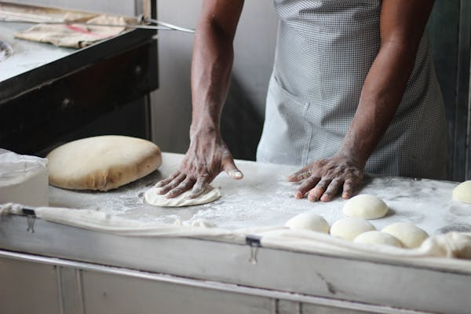

Buns are a universal delight,
enjoyed by cultures around the world in various forms.
From the soft and fluffy Baozi of China to the rich
and buttery Brioche of France, each bun brings
its unique flavor and texture to the table.
In the Philippines, Pan de Sal is a breakfast staple,
while in Sweden, Semlor buns filled with almond paste
our bakery dough Bakery dough is the heart and soul of many baked goods, transforming simple ingredients into delicious treats. At its core, dough is a mixture of flour, water, and leavening agents like yeast or baking powder. However, the magic truly happens through the process of mixing, kneading, and fermenting. Proper kneading develops the gluten, a network of proteins that gives the dough its elasticity and strength. Fermentation allows the dough to rise, creating the airy structure we all love in bread. Depending on the recipe, additional ingredients like sugar, butter, eggs, and milk can be added to enrich the dough, resulting in a variety of textures and flavors. From the chewy crust of a rustic baguette to the soft, buttery layers of a croissant, the versatility of bakery dough is what makes it such an essential part of baking.
delightful array of treats that can satisfy any sweet tooth or savory craving. From the classic allure of a freshly baked chocolate chip cookie to the indulgent layers of a rich, creamy cheesecake, the world of bakery delights is diverse and tempting. Sweet pastries like éclairs, tarts, and cinnamon rolls offer a burst of flavor and texture, while savory options such as quiches, savory pies, and artisan breads provide hearty, comforting bites. Each dish is crafted with care, blending high-quality ingredients, precise techniques, and a dash of creativity. Whether you're enjoying a flaky croissant with your morning coffee or savoring a slice of decadent red velvet cake at a celebration, bakery dishes bring joy and deliciousness to every occasion.cinnamon rolls offer a burst of flavor and texture, while savory options such as quiches, savory pies, and artisan breads provide hearty, comforting bites. Each dish is crafted with carethe cornerstone of many meals. Dinner rolls, garlic knots, and focaccia bread are perfect additions to a savory spread. Tarts and quiches arts, with their delicate crusts and luscious fillings, can be both sweet and savory. Lemon tarts, fruit tarts, and chocolate tarts are just a few examples. Quiches, like a classic Lorraine with bacon and cheese, or a vegetable quiche with spinach and mushrooms, are savory elights that make for a satisfying meal. Cookies and biscuits from gooey chocolate chip cookies to crumbly shortbread biscuits, these small treats are big on flavor. Gingerbread cookies, oatmeal raisin cookies, and biscotti are just a few varieties that bring joy to both kids and adults alike . The beauty of bakery dishes lies in their ability to bring comfort, joy, and a sense of indulgence. They are not just food; they are experiences to be savored and shared.
the bakers sage@2025. all rights resvered